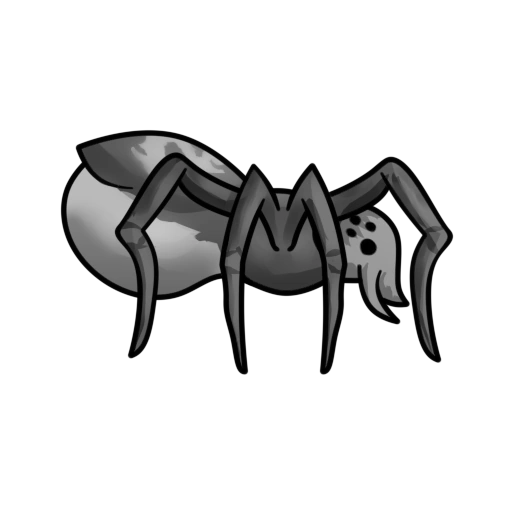

Historias de terror
Anabelle
John Form acha que encontrou o presente ideal para sua esposa grávida, uma boneca vintage.
No entanto, a alegria do casal não dura muito.
Uma noite terrível, membros de uma seita satânica invadem a casa do casal em um ataque violento.
Ao tentarem invocar um demônio, eles mancham a boneca de sangue, tornando-a receptora de uma entidade do mal.
Freddy Krueger
Freddy Krueger é um personagem fictício da série de filmes de terror A Nightmare on Elm Street.
Freddy é um assassino de crianças da fictícia Springwood, Ohio, que após ser queimado por
pais vingativos passa a atacar adolescentes em seus sonhos, matando-as no mundo
real por tabela, freddy por ventura, tem uma filha que por outro lado é totalmente difente do pai
Jason Voorhees
Jason Voorhees é um personagem fictício da série de filmes slasher Sexta-Feira 13,
um assassino monstruoso conhecido por usar uma máscara de hóquei no gelo e um facão como principal arma de ataque.
Apareceu pela primeira vez no longa-metragem Friday the 13th, dirigido por Sean S. Cunningham
Slander man
Slender Man ou Slenderman é um personagem fictício sobrenatural que se originou como um meme da internet criado
pelo usuário Eric Knudsen no fórum de discussão Something Awful em 2009.
Ele é descrito como semelhante a um homem magro, anormalmente alto,
com uma cabeça branca e inexpressiva e que veste um terno preto